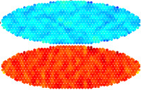

|
Data mining to discover hundreds of new 2d and 1d materials. We create a data mining algorithm that discovers hundresds of new 2d and 1d materials. Our algorithm searches through a database of roughly 70,000 materials that have been either synthesized or mined previously and determines which of the bulk structures exist in a layered or 1d wire form. This opens many opportunities for new 1d and 2d materials to be exfoliated or synthesized in the lab. |
A defined Lifshitz model provides fast van der Waals computations for layered materials We discover that a defined Lifshitz-based model can provide van der Waals (vdW) potentials to within 8-20% of advanced electronic structure calculations (ACFDT-RPA) while being orders of magnitude faster. Using this fast model, we study the vdW binding properties of 210 three-layered heterostructures and discover the potential for repulsive three-body vdW effects. |
|
 |
We screen 12,000 candidates comprising all known lithium-containing inorganic crystalline solids and provide a list of 21 promising structures. |
 |
Electrostatic gating drives structural phase transitions in monolayer materials Two-dimensional transition metal dichalcogenides undergo structural semiconductor-to-semimetal phase transition under electrostatic gating of several volts. |
 |
L1 regularization enables efficient model reduction of large-scale chemical reaction networks We use L1 regularization to reduce a large chemical reaction network observed from molecular dynamics simulations of shock compressed liquid methane, and find that CH4 decomposition can be modeled with less than 9% relative error using 11% of reactions. |
Atomistic simulation of shock-induced silica crystallization Using the Multi-Scale Shock Technique for molecular dynamics simulation of millions of atoms, we discover that SiO2, a prototypical good glass former, can be transformed to a very bad glass former upon the application of high pressure by the shock compression of meteor impact. |
|
 |
Simulated coherent control of an isomerization reaction using THz electric field pulses We have demonstrated simulated coherent control of a chemical isomerization, using strong THz electric field pulses to move the structure to a higher-energy state with only a few degrees of residual heating. |
|  | Strain Engineering in Monolayer Materials Using Patterned Adatom Adsorption Our work shows that strains as large as 5% can be produced in monolayer materials using patterned adatom adsorption. Our results elucidate a method for strain engineering at the nanoscale in monolayer devices. |
 | Deformations drive structural phase transitions in monolayer materials. We discover that certain two-dimensional transition metal dichalcogenides undergo structural metal-to-insulator phase transitions under tension. Our calculations reveal that MoTe2 transforms at the smallest tensile strains: between 0.3 and 3% under uniaxial conditions. |
Electromechanical Bending in Boron Nitride Bilayers Our work reveals a unique and manifestly nanoscale curvature-electric field coupling in boron nitride bilayers. This discovery hints at the possibility of electrically controlling or sensing the curvature of a membrane that is only 0.3 nm thick. |
|
 |
Hydrogen and Fluorine coadsorption leads to piezoelectricity in graphene. Motivated by a search for electromechanical coupling in monolayer materials, we have discovered that two types of piezoelectricity can be engineered into graphene when it is chemically modified with H and F. |
Quantum corrections bring 40% lower pressure onset for methane dissociaton under shock compression. We have developed a methodology for atomistic simulations of shock compressed materials that, for the first time, incorporates semi-classical quantum nuclear effects self-consistently. In our new method, the quantum nuclear effects are achieved with almost no additional computational expense. |
|
Intrinsic Piezoelectricity in Two-Dimensional Materials Our research has discovered that many of the widely studied two-dimensional monolayer crystals have excellent piezoelectric properties, making them ideally suited for applications in nanoscale technology. |
|
|
Engineered Piezoelectricity in Graphene Piezoelectric effects can be engineered into non-piezoelectric graphene through the selective surface adsorption of atoms. |

|
Amino acid containing complexes may form in a shocked comet Multi-scale simulations reveal that shock compression of comet ice (water + small organic molecules) may generate biologically-relevant molecules. In collaboration with LLNL. |
|
A new ultrafast probe of phase transformations Molecular dynamics simulations of shock waves in CdSe show that THz frequency electromagnetic radiation can be emitted and used as an ultrafast passive probe of the wurtzite to rocksalt phase transformation. The radiation contains information about the transformation pathway. |